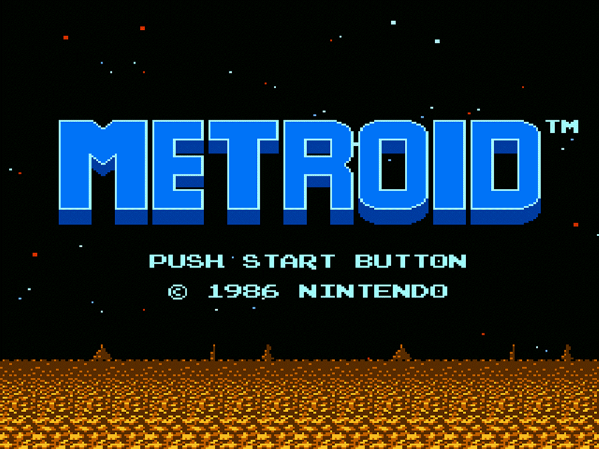

Metroid è una famosa serie di videogiochi a tema fantascientifico,
concepita da Makoto Kanoh e Hiroji Kiyotake e prodotta da Nintendo a partire dal 1986.
La serie è nota, oltre che per lo stile di gioco non lineare,
per essere stata una delle prime ad avere una protagonista femminile: Samus Aran, cacciatrice di taglie spaziale.
Metroid è una delle saghe di maggiore successo per Nintendo, sia per pubblico che per critica.
Nel 2002 la Retro Studio, commissionata da Nintendo, pubblica il primo capitolo di Metroid Prime, il primo capitolo della saga
di Metroid ad essere trasportato alle tre dimensioni.
Come i precedenti ha come protagonista la cacciatrice di taglie Samus Aran.
Il titolo, pur utilizzando una visuale in prima persona tipica degli sparatutto, ha mantenuto le meccaniche di gioco
tipiche degli episodi a due dimensioni, può quindi essere considerato come un'avventura in prima persona.
Il giocatore è immerso in un'atmosfera ben caratterizzata e, circondato da un mondo estraneo e da creature ostili,
dove dovrà farsi avanti al fine di sventare i malefici piani dei Pirati Spaziali, acerrimi nemici di Samus.